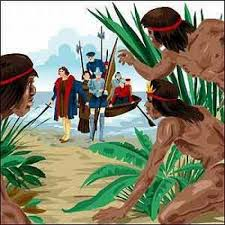
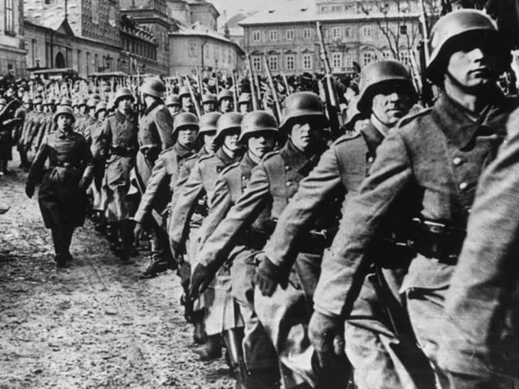

A história do basil não tem um marco inicial bem definido. Não obstante, tradicionalmete, existe uma datação recorrente sobre a chegada dos portugueses com Pedro Alváres Cabral. Em 22 de abril de 1500 á região costeira de onde é a Bahia.
clique aquiSeria esse então o``Descobrimento do Brasil``. Há evidências da presença de humanos no Brasil há pelo menos 12 mil anos. Cerca de três grandes grupos de seres humanos primitivos ocuparam o Brasil, como os caçadores-coletores, os sambaquis e os povos agricultores.
Em 1500, os portugueses se deram conta que há terras no sul da linha do Equador e passaram a ocupar o território. Isto mudaria para sempre a vida dos povos indígenas, dos africanos e dos europeus.Os portugueses tinham como objetivo explorar as riquezas naturais do Brasil e o primeiro produto comercializado foi o pau-brasil. Depois, os portugueses transplantaram o cultivo da cana de açúcar, já praticado na Madeira, para as Américas. Para trabalhar nestas plantações, os indígenas foram escravizados.
Para estimular o povoamento do novo território foi criado o sistema de Capitanias Hereditárias. Assim, uma pessoa recebia a propriedade de uma grande extensão de terra e tinha como obrigação cuidar do território, evitando invasões e gerando lucros através do trabalho agrícola. Em vista disso, um grupo de mineradores e intelectuais planejou destituir o governador e tomar o poder. Os planos, contudo, foram descobertos antes do dia combinado e os participantes foram presos.
Várias instituições foram criadas no Rio de Janeiro, como a Biblioteca Real, o Jardim Botânico, a Academia Militar. A fim de aumentar o status do Brasil, João o elevou o território à categoria de Reino Unido em dezembro de 1815 e os brasileiros passaram a ter o direito de enviar seus próprios deputados para a corte de Lisboa.
A escravidão no Brasil teve início no século XVI, durante o período colonial. Constituiu na mão de obra forçada de homens e mulheres africanos. Essas pessoas foram retiradas a forças de muitos grupos éticos de quais faziam parte.
A escravidão no Brasil foi tão cruel e a quantidade de africanos que foram trazidos durante três séculos foi tão grande que a imagem do trabalhador escravo em nosso país associou-se com a cor de pele do africano. Um sintoma evidente do racismo que estava por trás da instituição da escravidão em nosso país.
A escravidão foi uma instituição que se estabeleceu no Brasil por volta da década de 1530. A escravidão no Brasil atendia á demanda dos portugueses por trabalhadores braçais e, nos seculos XVI e XVII isso esta relacionado com trabalhos. A partir de 1534, os portugueses implantaram as capitanias hereditárias, com isso, passaram a incentivar o cultivo de cana-de-açúcar e o desenvolvimento de engenhos para produzir açúcar. Como essa era uma atividade complexa e que necessitava de mão de obra.
Os portugueses encontraram na escravidão a saída para a falta de trabalhadores já que eles próprios não queriam realizar o trabalho pesado. Assim, o primeiro grupo a sofrer com a escravização foram os indígenas. Os indígenas foram a principal mão de obra escrava dos portugueses
até meados do século XVII, quando, então, começaram a ser superados em números pelos escravos africanos. Escravizar um indígena, em comparação com um africano, era muito mais acessível para os colonos portugueses, mas uma série de questões tornavam essa prática mais problemática.
A medida que a colonização do Brasil se desenvolveu, a necessidade por trabalhadores era tão grande que fez que esse comércio prosperasse em larga escala. O sucesso do tráfico negreiro está relacionado, dessa forma, com a necessidade da colônia por trabalhadores e esse negócio foi altamente lucrativo para os traficantes, assim como para a Coroa.
"A Guerra Fria aconteceu entre 1947 e 1991 e marcou a polarização do mundo em dois blocos: um liderado pelos americanos e outro pelos soviéticos. Essa polarização gerou um conflito político-ideológico entre as duas nações e seus respectivos blocos, cada qual defendendo os seus interesses e a sua ideologia.
"O discurso praticado pela Doutrina Truman utilizava de um discurso alarmista que colocava o governo soviético como um governo expansionista. O governo americano, no entanto, sabia que a postura dos soviéticos era uma postura defensiva, porque o país estava destruído pela guerra e buscava garantir seus interesses apenas na sua zona de influência." "Além disso, outro ponto importante é que as dificuldades econômicas que os países europeus enfrentariam no pós-guerra poderiam abrir espaço para o avanço do comunismo e isso preocupava os americanos. Assim, os americanos desenvolveram um discurso maniqueísta, que foi responsável por polarizar a relação entre as duas nações."
A Guerra Fria foi o conflito político-ideológico que se estabeleceu entre Estados Unidos e União Soviética após a Segunda Guerra Mundial. Essa polarização marcou o mundo de 12 de março de 1947 (data do discurso de Truman, então presidente dos EUA, anunciando a guerra contra o comunismo) a 26 de dezembro de 1991 (data da renúncia de Gorbatchev, último presidente soviético), causando diversos conflitos em outros países, como as guerras da Coreia,
do Vietnã e do Afeganistão, além da divisão de outros, como a Alemanha, que teve até sua capital dividida (pelo Muro de Berlim).Na América Latina, a Guerra Fria fez com que os EUA, via CIA, patrocinassem diversas ditaduras, inclusive a brasileira, que durou mais de 20 anos. O fim da Guerra Fria só aconteceu com o fim da URSS, e suas principais consequências foram: o estabelecimento do capitalismo como única ordem mundial e a criação de novos países na Ásia e no Leste Europeu.
Interferência externa: sendo a Guerra Fria uma disputa por hegemonia e territórios, a interferência externa foi uma marca do período, pois tanto URSS quanto EUA usavam e abusavam de suas influências em diversos países, não só nos próximos. Dessa maneira, foram dados vários golpes de Estado na América Latina e surgiram diversos conflitos na Ásia e na África
Em 1947, visando combater o comunismo e a influência soviética, o presidente americano Harry Truman proferiu um discurso no Congresso americano. Nele, afirmou que os Estados Unidos se posicionariam a favor das nações livres que desejassem resistir às tentativas de dominação externa. A dominação a que ele se referia era ao crescimento da União Soviética e sua influência em novos territórios.

No mesmo ano, o secretário de Estado americano, George Marshall, lançou o Plano Marshall, que propunha a ajuda econômica aos países da Europa Ocidental. Esse plano surgiu em um contexto onde os partidos de esquerda cresciam devido ao desemprego e a crise generalizadaComo resposta, a União Soviética criou o Kominform, organismo encarregado de conseguir a união dos principais partidos comunistas europeus. Também era sua tarefa afastar da supremacia norte-americana os países sob sua influência, gerando o bloco da “cortina de ferro”. Ao fim das negociações entre os vencedores da Segunda Guerra Mundial, a Europa ficou dividida em duas partes. Estas correspondiam ao limite do avanço de tropas soviéticas e americanas durante a guerra.
guerra fria, clique para ver mais.
Em 1955, em represália, a União Soviética criou o Pacto de Varsóvia, para impedir o avanço capitalista na sua área de influência. No ano de sua fundação faziam parte , Albânia, Alemanha Oriental, Bulgária, Tchecoslováquia, Hungria, Polônia e Romênia. Os dois pactos tinham em comum o compromisso de mútua proteção entre seus membros, pois entendiam que a agressão a um deles atingiria a todos. O Pacto de Varsóvia desapareceu entre 1990 e 1991, em consequência do fim dos regimes socialista do Leste europeu. Do outro lado, a OTAN perdeu o significado que lhe deu origem.